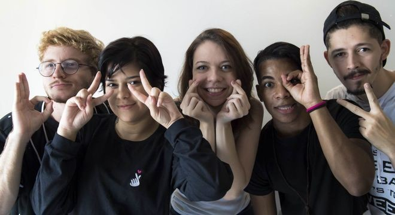

As juventudes e as “fronteiras” culturais
Quando pensamos em juventudes, logo surge o pensamento vinculado às pessoas que estão na faixa etária dos 15 aos 20 anos. É claro que essa é uma visão correta, mas há várias formas de se pensar sobre as juventudes, seu comportamento e influência na sociedade. Afinal sempre carregamos ao longo da vida valores, crenças e costumes adquiridos nessa fase e que irão influenciar nosso comportamento na fase adulta. Essas crenças, visão de mundo e comportamento, não são homogêneas, ou seja, não há uma forma única de se pensar as juventudes, elas não iguais em todas as sociedades, grupos, classes sociais etc.
Pensaremos nesse momento como a sociedade ocidental elabora uma visão “de juventude”. Temos por prática uma perspectiva que jovens são indivíduos que estão inseridos em uma família, cujo a classe social irá favorecer seus estudos, e que é visto “naturalmente” a sua continuidade de estudar e posteriormente trabalhar. Em algumas situações, esses são considerados o “futuro de um país, o futuro da sociedade”. Esses jovens reivindicam melhorias e bens para a sociedade, participando de movimentos sociais, movimentos estudantis e participando ativamente de escolhas sobre o futuro. Como menciona o estudioso sobre as juventudes Morentin (2019). Uma segunda abordagem apontada por Morentin (2019) está na relação dos uma parcela da juventude que vê a chegada dessa etapa da vida como um momento de inserção no mercado de trabalho, de responsabilidades, de alguém em fase de garantir já o seu próprio sustento e de sua família em algumas ocasiões. A visão de mundo de estudar e posteriormente trabalhar, é empregado portanto as classes sociais específicas, pois, no Brasil quando falamos em juventudes, um dos principais pontos a serem estudados é divisão em classes sociais.
Esses dois exemplos já demonstram que estamos abordando uma questão plural, onde as relações sociais influenciam. Existe uma visão universal de comportamento dessas pessoas, como se pudéssemos elaborar uma regra única de comportamento. Mas as fronteiras e distinções existem, principalmente nas cidades urbanas, cidades denominadas de “grandes”. Não há uma regra de comportamento, mas existem padrões de comportamento, pautado numa visão global, como se o mundo pudesse denominar como os jovens devem agir e o que precisam fazer nesse momento de suas vidas. Abordamos anteriormente que as cidades possuem territórios pré- estipulados, onde uma parcela da população pode ter acesso livre, enquanto uma outra, “diferente”, não pode acessar por fronteiras simbólicas. Dentro desses territórios os grupos mais atingidos por essas regras, são os jovens que ali habitam. Esses grupos de jovens sabem onde podem acessar, onde podem circular livremente, essa é umas das questões mais presentes em jovens urbanos, ou seja, jovens que crescem em grandes cidades com essas regras estabelecidas.
A globalização está presente na vida de todos os indivíduos, não podemos escolher se esse fenômeno econômico fará parte ou não do desenvolvimento dos jovens. Esse fato influencia diretamente na perspectiva que as sociedades projetam nos jovens. Pense nos padrões de consumo e de comportamento? Certamente suas respostas estão vinculadas a uma visão universal do que são as juventudes. Como se houvesse uma única forma de se viver, como se as populações fossem homogêneas. O que já percebemos, nos temas estudados anteriormente, que não são, e as distinções fazem parte do nosso convívio em sociedade.
No Brasil, desde de 2013 entrou em vigor a Lei nº 12.852, mais conhecida como Estatuto da Juventude, que estipula que os jovens são pessoas residentes no território brasileiro, que estão na faixa etária de 15 e 29 anos. Veja alguns trechos da Lei que entrou em vigor em 2013, Segundo o Parlamento Jovem brasileiro (texto de 05/08/2021):
“A aprovação desse conjunto de leis envolveu um longo tempo de debate. Foram nove anos em tramitação no Congresso Nacional, para que fosse possível um consenso que reconhecesse o papel da juventude no desenvolvimento do país. Entre os direitos específicos garantidos estão: direito à participação social e política e à representação juvenil; direito à profissionalização, à diversidade e à sustentabilidade. Outros dois benefícios estabelecidos pela legislação foram o direito a meia-entrada em eventos culturais e esportivos para estudantes e jovens com baixa renda, sendo estes últimos também garantidos o direito à gratuidade e desconto no transporte interestadual.”
O Estatuto da Juventude em vigor no Brasil, garante direitos básicos aos jovens, visando o bem-estar e benefícios no nosso território. Mas, como já foi mencionado anteriormente, nossa sociedade carrega muitas influências trazidas pelo avanço tecnológico e a globalização. E isso, é claro, que também influencia na vida, na cultura e no comportamento dos jovens. Essa visão de “jovens”, está diretamente vinculada às gerações percebidas em países da Europa e dos Estados Unidos (EUA) sobre as novas gerações de pessoas que se desenvolviam em seus países. As nomenclaturas vinculadas a essa nova forma de “gerações” são: geração Baby Boomers, geração X, geração Y, geração Z e Alpha. O que irá diferenciar cada uma delas é o momento histórico, social, político e de padrões de consumo, pautados a partir do avanço da globalização e das tecnologias após as Grandes Guerras Mundiais.
A geração Baby Boomers, a primeira a ser classificada, surgiu a partir da Segunda Guerra Mundial. Carrega esse nome por que as pessoas dessa geração acompanharam as grandes mudanças populacionais no mundo. Viram a explosão populacional ocorrer, as migrações entre países atingidos pelas grandes guerras e mudanças políticas significativas. Nos Estados Unidos e países Europeus, essa geração iniciou na passagem da década de 1940 para 1950. Mas no Brasil, o se iniciou se deu a partir dos anos 1960, com o processo tecnológico industrial. Essa defasagem ocorre em decorrência do atraso em estudos para o desenvolvimento tecnológico e também em estudos vinculados às populações, como esse sobre gerações. O padrão de consumo dessa geração, está vinculado a itens de viagens, moda e passam somente 28 horas semanais em frente a um computador.
A geração X é a geração que mais se vinculou ao desenvolvimento tecnológico, são os nascidos entre 1961 e 1981. O site Consumidor Moderno () afirma que foi a geração que “ligou os motores”. Essa geração são os grandes responsáveis pelas compras e consumo de seus lares, gastam muito mais em vestuário e do que em bens e serviços, consumindo marcas famosas (não é à toa que nesse período surgiram grandes marcas de consumo de luxo).
A geração Y, também é conhecida como a Geração do Millennials. São os nascidos do ano de 1981 até meados dos anos 1990. Essa geração são os “nativos digitais”, essas pessoas nasceram juntamente com a grande expansão da internet, olhar para uma tela é natural para essa geração. O padrão de comportamento está vinculado ao coletivo, ao permanecer mais tempo na casa de seus pais e o grande foco é ser feliz, e não um sonho financeiro.
A geração Z, são os nascidos na década de 2000. Os nascidos nessa época conhecem desde criança os smartphones. A plataforma de vídeos Youtube influenciam suas decisões de compras, muito mais do que propagandas na televisão. Essa geração desconhece o mundo antes da globalização, dos vínculos de redes sociais e das tecnologias.
A última geração, a que estamos inseridos no momento, são as crianças nascidas a partir do ano de 2010, chamadas de Alpha. Certamente você tem ao seu redor crianças, adolescentes dessa geração. O mundo para eles e elas, é completamente digital, tudo ocorre nas telas de celulares, e todo padrão de consumo está vinculado aos aplicativos.
De acordo com o vídeo, o momento histórico, social e político e os padrões de consumo da época influenciam as gerações, que exercem um papel fundamental sobre as novas formas de juventude.
As influências que cada uma dessas gerações tem sobre as novas formas de juventude, principalmente a geração Z e a Alpha. Realize um exercício de pensar sobre o quanto os jovens e os adolescentes no momento passam conectados e consumindo serviços de internet, que formarão suas formas de pensar, de enxergar o mundo, de se posicionar diante de situações políticas e sociais etc. Essas posições podem estar vinculadas a guerras e conflitos em outros continentes, muito distantes, a situações do seu país, como os imigrantes venezuelanos, assim como questões básicas, como saúde e educação.
A juventude consome essas informações, forma uma opinião e, sem receio, consegue expor nas redes sociais, em conversas com amigos on-line, que, em muitas situações, não moram na mesma cidade, estado e, até mesmo, país. A globalização possibilita que se tenha acesso, de forma rápida, a tudo que ocorre, e os jovens estão recebendo de forma momentânea esses acontecimentos.

Grupo com cinco jovens, quatro meninos e uma menina, demonstrando a diversidade, há brancos e negros. Estão fazendo sinal com os dedos de “V” de vitória, corações e “Ok”. Estão vestidos com roupas e cor de cabelos no estilo coreano das bandas e músicas.
Essa rapidez influencia também no consumo da juventude, onde escolher uma roupa, um estilo musical em aplicativos de música e seus grupos de amigos determinará de qual viés cultural cada indivíduo pertence. O exemplo que é possível verificar muito próximo são os grupos de adolescentes e jovens que participam de festas e festivais de anime e de música K-pop, de origem oriental (a música K-pop é estilo coreano).
Há décadas é possível presenciar festas da população oriental em cidades como São Paulo, onde há o Bairro Liberdade, uma comunidade de descendentes de japoneses. Nesse bairro, uma vez ao ano, ocorrem festas com comidas típicas, vestimentas e comemorações do Japão. Isso sempre foi muito fechado dentro da comunidade e descendentes de imigrantes que chegaram ao Brasil ainda no século XIX.
Esse exemplo é para entender que existem diferenças entre festas de imigrantes e festas de inclusão de uma cultura em outra. No Brasil, há regiões com a presença de imigrantes oriundos da Itália e da Alemanha, e, em determinadas épocas do ano, realizam festas, comidas típicas, danças e vestimentas. As festas de animes e de música K-pop, que estão difundidos nos jovens brasileiros, estão presentes em suas formações, visão de mundo e educação.
Esses mesmos jovens tão conectados, ligados aos conhecimentos tecnológicos e informações mundiais, são, hoje em dia, a geração mais presente e preocupada com o planeta. As últimas gerações presenciam as mudanças climáticas mundiais, debatem, estudam e reivindicam os problemas sociais. Há esse avanço tecnológico muito presente nos últimos anos, mas que causou também impactos significativos ao meio ambiente. A seguir, essas consequências no planeta serão estudadas.